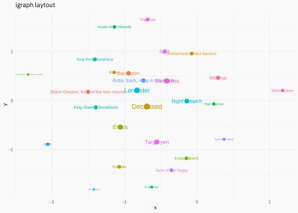

My first steps using the gganimate package using Game of Thrones
data-visualization
ggplot2
animation
Author
Joshua Kunst Fuentes
Published
April 23, 2019
Introduction
Why use GOT data? Because I was participating in #datosdemiercoles which is the spanish version of #tidytuesday. So the data is given and the purpouse is to learn new packages using that data and share with the community, you know this already, right?
Secondly the package I want to learn beside {ggforce} is {gganimate} so a very first idea was represent every character as a point and move according the actual affiliations. A kind of copy inspiration from FlowingData’s A Day in the Life of Americans1
Disclaimers
I know the animation is not then best way to visualiza data! Don’t judge me please! But is fun to play with.
I don’t follow the series so I don’t know if the results or animations makes any sense.
The data, the wrangling and the cleaning
The data come from this post where the shifting affiliations are visualized using an alluyvial diagram. It’s a nice post by Matthew Lunkes where he tell all the process to get the final chart:
In this case the data can be downloaded from this repository https://github.com/MattLunkes/GoT_Affiliations.
# A tibble: 488 × 11
Name Origin `Starting Affiliation` `End of S1` `End of S2` `End of S3`
<chr> <chr> <chr> <chr> <chr> <chr>
1 Tyrion Lan… House… King Robert Baratheon King Joffr… King Joffr… King Joffr…
2 Cersei Lan… House… King Robert Baratheon King Joffr… King Joffr… King Joffr…
3 Daenerys T… House… Viserys Targaryen Daenerys T… Daenerys T… Daenerys T…
4 Jon Snow House… King Robert Baratheon Night's Wa… Wildlings Night's Wa…
5 Sansa Stark House… King Robert Baratheon King Joffr… King Joffr… King Joffr…
6 Arya Stark House… King Robert Baratheon Other, Wes… Other, Wes… Other, Wes…
7 Jaime Lann… House… King Robert Baratheon King Joffr… King Joffr… King Joffr…
8 Jorah Morm… House… Viserys Targaryen Daenerys T… Daenerys T… Daenerys T…
9 Theon Grey… House… King Robert Baratheon Robb Stark… Balon Grey… King Joffr…
10 Samwell Ta… House… Night's Watch Night's Wa… Night's Wa… Night's Wa…
# ℹ 478 more rows
# ℹ 5 more variables: `End of S4` <chr>, `End of S5` <chr>, `End of S6` <chr>,
# `End of S7` <chr>, Episodes <dbl>
As we see, the data comes in a not tidy way so gather is our friend here.
Code
data_long<-data|>janitor::clean_names()|>rename(end_of_s0 =starting_affiliation)|>select(-episodes, -origin)|>gather(season, affiliation, -name)|>mutate( season =as.numeric(str_extract(season, "\\d+")), affiliation =case_when(affiliation=="King Robert Baratheon"~"Baratheon",affiliation=="Viserys Targaryen"~"Targaryen",affiliation=="King Joffrey Baratheon"~"Lannister",affiliation=="Daenerys Targaryen"~"Targaryen",affiliation=="Night's Watch"~"Night's Watch",affiliation=="Other, Westeros"~"Westeros",affiliation=="Wildlings"~"Wildlings",affiliation=="King Tommen Baratheon"~"Lannister",affiliation=="Petyr Baelish, Lord Protector of the Vale"~"The Vale",affiliation=="Other, Essos"~"Essos",affiliation=="Roose Bolton, Lord Paramount of the North"~"Bolton",affiliation=="Queen Cersei Lannister"~"Lannister",affiliation=="Jon Snow, King in the North"~"Stark",TRUE~affiliation))# there are some repeated characters?data_long<-data_long|>semi_join(count(data, Name)|>filter(n==1), by =c("name"="Name"))|># importante for the ggrepel partarrange(season, name, affiliation)data_long
At the beginning I think use a circular layout and see what happend but the result was far for beign interesting, and as we can see I was a failure in my first attempt using {gganimate}.
Well, so the next idea and step was to get closer the affilations related. How can be two affiliations be related? An answer can be the the amount of characters which move from one to another.
Code
ts<-data_long|>distinct(season)|>pull()|>head(-1)change_season<-map_df(ts, function(t=0){dout<-full_join(data_long|>filter(season==t),data_long|>filter(season==t+1), by ="name", suffix =c("_before", "_actual"))|>count(from =affiliation_before, to =affiliation_actual)dout<-dout|>filter(complete.cases(dout))|>mutate(season =t)dout})change_total<-change_season|>group_by(from, to)|>summarise(n =sum(n))|>ungroup()change_total
# A tibble: 119 × 3
from to n
<chr> <chr> <int>
1 Balon Greyjoy, King of the Iron Islands Balon Greyjoy, King of the Iro… 31
2 Balon Greyjoy, King of the Iron Islands Deceased 7
3 Balon Greyjoy, King of the Iron Islands Euron Greyjoy, King of the Iro… 4
4 Balon Greyjoy, King of the Iron Islands Lannister 1
5 Balon Greyjoy, King of the Iron Islands Targaryen 3
6 Baratheon Balon Greyjoy, King of the Iro… 9
7 Baratheon Brotherhood Without Banners 5
8 Baratheon Deceased 15
9 Baratheon Essos 1
10 Baratheon House Arryn (Neutral) 12
# ℹ 109 more rows
Now, with this data we can use the {igraph} package and the graph_from_data_frame function to get a graph from the previous data frame and then get a layout.
Nice! but we need the positions instead of the image. So we’ll use the layout_with_fr to get some layout of our graph.
Code
set.seed(123)layout<-layout_with_fr(g)affiliations<-tibble( affiliation =V(g)$name, x =layout[, 2], y =layout[, 1], degree =degree(g))affiliations<-data_long|>count(affiliation)|>left_join(affiliations, ., by ="affiliation")affiliations
# A tibble: 27 × 5
affiliation n x y degree
<chr> <int> <dbl> <dbl> <dbl>
1 Balon Greyjoy, King of the Iron Islands 46 -1.50 0.178 9
2 Baratheon 200 -0.944 0.556 11
3 Bolton 18 -1.14 0.573 5
4 Brotherhood Without Banners 52 -0.0743 0.958 6
5 Deceased 826 -0.691 -0.123 26
6 Dothraki 100 -1.07 -1.35 6
7 Essos 262 -1.06 -0.541 16
8 Essos Slavers 113 -0.146 -1.18 6
9 Euron Greyjoy, King of the Iron Islands 4 -2.33 0.533 2
10 High Sparrow 7 0.232 -0.0707 4
# ℹ 17 more rows
At this point we are ready to use ggplot and check!
Code
p1<-ggplot(affiliations, aes(x, y, color =affiliation, label =affiliation, size =degree))+geom_point()+geom_text()+scale_size(range =c(1, 4))+theme(legend.position ="none")+labs(title ="igraph laytout")p1

This is really an improvement from the the circular layout. The downside is the main affiliations are too close so the text is overlaping. A simple solution to this was generate an equidistant sequence for every set of coordinates, \(x\) and \(y\).
Happy with the effect of a simple fix for the overlaping text. And I think this change keep the spirit of the original graph’s shape.
Character positions
To get the character positions for every step/time/season we decided to put them in the corresponding affiliation making a circle around it and then adding a random noise
Code
get_reg_poly_coords<-function(sides=5, radius=1, x0=0, y0=0){# https://stackoverflow.com/a/7198179/829971x<-radius*cos(2*pi*(1:sides)/sides)+x0y<-radius*sin(2*pi*(1:sides)/sides)+y0return(tibble(x, y))}characters<-data_long|>count(season, affiliation)|>mutate(coords =map2(n, 1/nrow(affiliations), get_reg_poly_coords))|>unnest(c(coords))|>select(-season, -affiliation)characters<-bind_cols(data_long, characters)|>left_join(affiliations, by =c("affiliation"), suffix =c(".character", ".affiliation"))|>mutate( x =x.character+x.affiliation, y =y.character+y.affiliation)|>mutate_at(vars(x, y), ~.x+runif(length(.x), -1, 1)/nrow(affiliations))
To get a very style GOT theme we need first the font, you can download from this link https://fontmeme.com/fonts/game-of-thrones-font/.2 and use it with the {extrafont} package.
We’ll select some important characters to use with {ggrepel} package:
For test purposes I recommend reduce de fps to 10, and duration as much you can according how many frames you are using so you can to check if the output animation is what you want quickly, then for the final output use at least 30 fps to get a smooth transition.